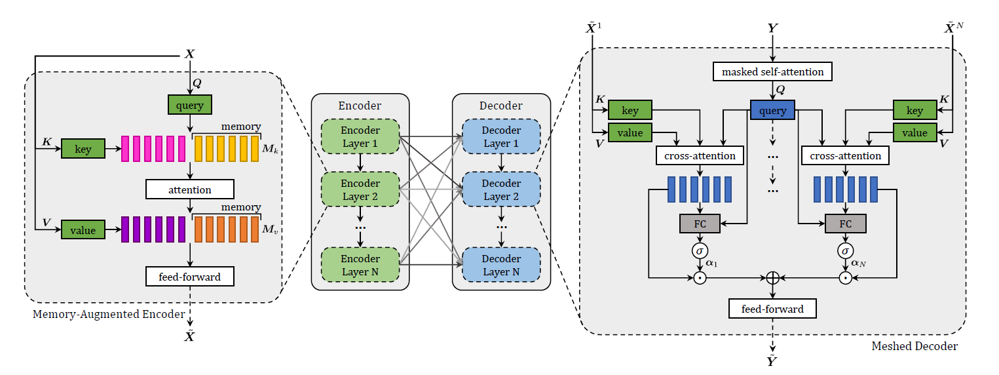

一些碎碎念
因为各种原因一直咕咕了正好一个月，今天闲下来就先解决图片的问题，顺便分享论文的阅读笔记 φ(゜▽゜*)♪ 剩下的随缘发（
文章解决的问题
image caption需要understand and model the relationships between visual and textual elements，来生成输出序列。Transformer虽表现优异，但在图像描述上还不够好，所以作者在Transformer的基础上提出了$\mathcal{M}^2$(Meshed Transformer with Memory).
创新点
- Memory: 通过Memory vector来对先验知识进行编码，期望能推断图像不同区域之间的关系
- Mesh: 句子的生成采用多层次结构，Encoder Layer和Decoder Layer之间以网络状的方式连接
数据集
COCO和nocaps
Model

整个模型分为encoder和decoder模块，encoder负责处理输入图像的区域并设计它们之间的关系，decoder从每个encoder的输出中逐字读取并输出描述。文字和图像级特征之间的模态内和跨模态的交互都是通过scaled dot-product attention来建模的。Attention定义为：
$$
\operatorname{Attention}( {Q}, {K}, {V}) = \operatorname{softmax} \left(\frac{ {Q} {K}^\top}{\sqrt{d}}\right) {V}
$$
和Transformer里的Scaled Dot-Product Attention定义方式一致。
Memory-Augmented Encoder
Encoder最上面这里输入的$X$是从输入图像中抽取出来的图像区域的集合。在最初的Transformer里的Self attention操作的公式如下
$$
\mathcal{S}( {X}) = \text{Attention}(W_q {X}, W_k {X}, W_v {X})
$$
把X经过三个不同的线性变换，然后作为Attention的输入。因为self-attention难以图像不同区域之间的关系，所以为了解决这个问题，作者引入了Memory机制，用来对先验知识进行编码。定义的Memory-augmented attention如下
$$
\mathcal{M}_{\text{mem}}( {X}) = \text{Attention}(W_q {X}, {K}, {V})
$$
$$
{K} = [W_k {X}, {M}_k]
$$
$$
{V} = [W_v {X}, {M}_v]
$$
输入的不再是对$X$的三种线性变换后的$Q$，$K$，$V$，这里的$K$和$V$是拓展过的，分别被拼接上了$M_k$和$M_v$. $M_k$和$M_v$是和$X$无关的可学习参数，通过SGD来更新。这里的Memory-augmented attention也可以是多头的，扩充方式和Transformer一样。
在Encoding layer，作者将记忆增强嵌入到一个类似transformer的层中。
$$
\mathcal{F}({X}_i) = U \sigma(VX_i + b) +c
$$
$$
{Z} = \text{AddNorm}(\mathcal{M}_{\text{mem}}(X))
$$
$$
\widetilde{ {X}}= \text{AddNorm} (\mathcal{F}(Z))
$$
这里的F是一个FNN，将输入的每个vector线性变换，过一次ReLU，再线性变换一次。总的流程是计算X的Memory-augmented attention并AddNorm, 过一次FNN再AddNorm得到输出。对比原来的Transformer的encoder，只有Self-Attention换成了Memory-augmented attention，其他部分都是一样的。
上面这是单层的layer, 把这些layer堆叠起来就是文中介绍的encoder.
Meshed Decoder
每一个Decoder Layer都要接受所有的Encoder Layer作为输入，也就是图像的多层表示。这就是为什么说这个叫做Meshed Decoder.
为了融合多层表示，作者采用了加权求和的方式，定义了一个Meshed Cross-Attention.
$$
\mathcal{M}_{\text{mesh}}(\widetilde{\mathcal{X}},{Y}) = \sum_{i=1}^N {\alpha}_i \odot \mathcal{C}(\widetilde{ {X}}^i, {Y} )
$$
$$
\mathcal{C}(\widetilde{ {X}}^i, {Y} ) = \text{Attention}(W_q {Y}, W_k \widetilde{ {X}}^i, W_v \widetilde{ {X}}^i)
$$
这里的C是Cross-Attention, 定义方式和Transformer里的一样，然后Meshed Cross-Attention就是对Encoder的每一个Layer都做Cross-Attention, 然后再加权求和。$\alpha_i$就是权重矩阵，通过下面的公式来计算
$$
{\alpha}_i = \sigma \left(W_i \left[ {Y}, \mathcal{C}(\widetilde{ {X}}^i, {Y})\right] + b_i\right)
$$
$W_i$和$b_i$是可学习的矩阵和向量。整体的decoding layer如下：
$$
{Z} = \text{AddNorm}(\mathcal{M}_{\text{mesh}}(\widetilde{\mathcal{X}}, \text{AddNorm}(\mathcal{S}_{\text{mask}}( {Y})))
$$
$$
\widetilde{ {Y}} = \text{AddNorm} (\mathcal{F}( {Z}))
$$
除了Mesh的部分，其他和Transformer都是一致的。
训练方法
使用word-level cross-entropy loss来训练
采用reinforcement learning对sequence generation结果进行微调
采用CIDEr-D作为奖励
$$
\nabla_\theta L(\theta) = - \frac{1}{k} \sum_{i=1}^k \left((r(w^i) - b) \nabla_\theta \log p(w^i)\right)
$$
评价方式
BLEU, METEOR, ROUGE, CIDEr, and SPICE.
实验结果
- 通过了消融实验，证明了Memory vectors和mesh-like structrue的有效性
- 在COCO leaderboard上排名第一
- 能较好地描述新物体